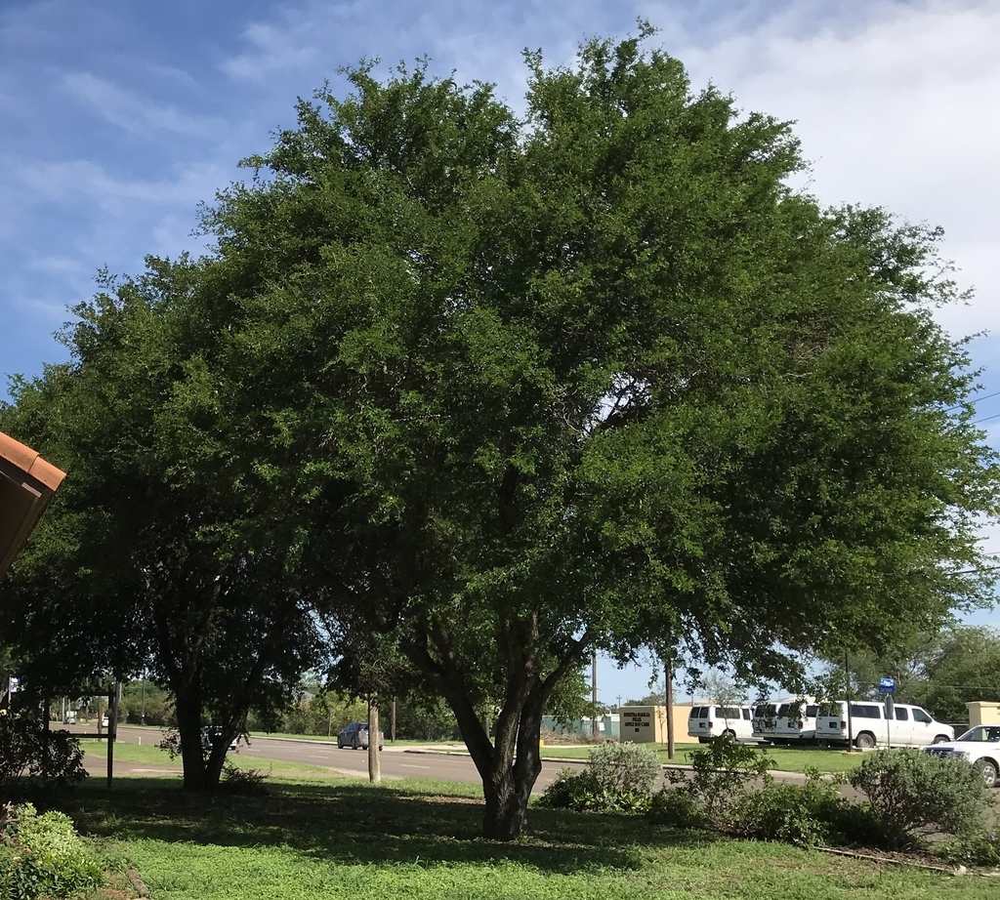
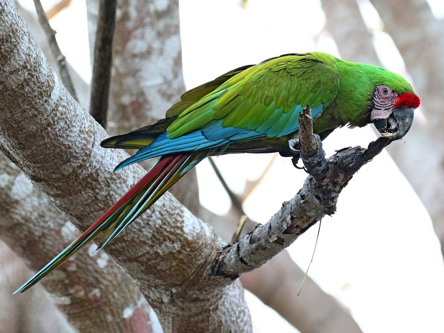

Explorando la Naturaleza de Tamaulipas
Biodiversidad y Paisajes Asombrosos
Flora y Fauna
Datos Interesantes
Sitio Oficial Tamaulipas Ambiente
¡Bienvenido a nuestro viaje natural!
Tamaulipas, un estado en el noreste de México, es hogar de una **diversidad impresionante de ecosistemas**...
Flora y Fauna Destacada
La riqueza biológica de Tamaulipas se manifiesta...
Árboles Emblemáticos:

-
Ébano (Pithecellobium ebano): Madera dura y resistente.
-
Anacahuita (Cordia boissieri): Floración hermosa y abundante.
-
Sabino (Taxodium mucronatum): Árboles longevos asociados a ríos.
Fauna Representativa:

- ≪Jaguar (Panthera onca)≫: El felino más grande de América.
- ≪Ocelote (Leopardus pardalis)≫: Felino mediano de hábitos nocturnos.
- ≪Mariposa Monarca (Danaus plexippus)≫: Migratoria, símbolo de conservación.
- ≪Guacamaya Verde (Ara militaris)≫: Ave colorida en peligro de extinción.
Para más información sobre las especies endémicas, visita:
Fauna de Tamaulipas en Wikipedia
.
Datos Interesantes sobre Ecosistemas
Conoce la distribución de algunos ecosistemas clave en Tamaulipas:
Ecosistemas Principales en Tamaulipas
|
Ecosistema
|
Características
|
Regiones Clave
|
|
Bosque de Encino y Pino
|
Áreas montañosas, clima templado.
|
Sierra Madre Oriental
|
| Matorral Xerófilo |
Zonas semiáridas, vegetación adaptada a sequía. |
Centro y Norte del Estado |
| Selva Baja Caducifolia |
Vegetación que pierde hojas en secas, clima cálido. |
Sur y Sureste del Estado |
| Manglares |
Ecosistemas costeros, protección y refugio. |
Lagunas costeras (Ej. Laguna Madre) |